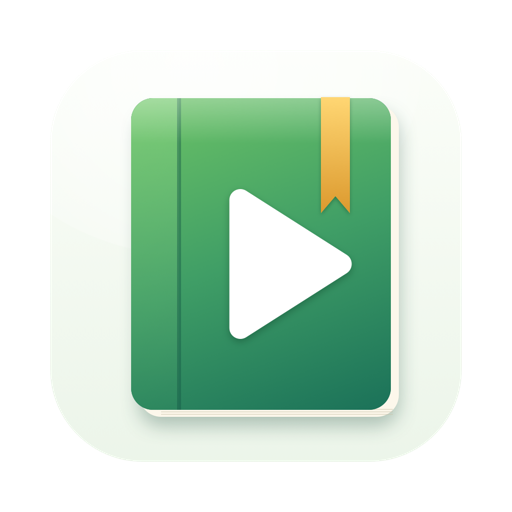

Bindette
Convierte archivos de audio en un audiolibro como es debido.
Qué hace
Bindette une archivos MP3, M4A, M4B, AAC, FLAC, WAV, AIFF y CAF en un único audiolibro .m4b con capítulos, portada y sus datos, listo para Apple Books y cualquier reproductor de audiolibros. En tu Mac, iPhone y iPad, donde una sola compra sirve para los tres, y en Android.
- Suelta y listo. Los archivos se ordenan de forma natural (Capítulo 2 antes que Capítulo 10) o por su número de pista; cada uno se convierte en un capítulo con el nombre de sus etiquetas o de su archivo; el título, el autor, el narrador y la portada salen de los archivos.
- Rápido y sin pérdidas. Si todos los archivos son AAC del mismo tipo, el audio se copia tal cual: un libro de 20 horas en segundos. Todo lo demás se codifica en AAC, varios archivos a la vez.
- Capítulos a tu manera. Renombra, combina y divide capítulos; divide por silencios con una vista previa de la forma de onda; importa y exporta listas de capítulos como texto o como hoja CUE. Los archivos M4B conservan sus capítulos.
- Todos los datos. Título, autor, narrador, serie, año, género, descripción, editorial, copyright y una portada que sueltas, pegas o eliges de un archivo y recortas en cuadrado.
- Suena en todas partes. Cada libro lleva una pista de capítulos de QuickTime y una lista de capítulos de Nero, y se comprueba después de escribirlo.
Requiere macOS 14 Sonoma o posterior; en iPhone y iPad, iOS y iPadOS 17 o posterior; en Android, Android 8.0 o posterior.
La privacidad en un párrafo
Bindette nunca se conecta a internet. Tu audio, tus portadas y tus libros se quedan en tu dispositivo. No hay cuenta, ni rastreo, ni analíticas, y no se recopila ningún dato. La política de privacidad completa dice lo mismo con más detalle.
Más apps del mismo creador
Apps pequeñas, cada una hecha para hacer una sola cosa bien. Sin cuentas, sin anuncios y ninguna te rastrea.
 StatuetteCPU, memoria, disco y red en la barra de menús.Mac
StatuetteCPU, memoria, disco y red en la barra de menús.Mac TocketteUn temporizador a un gesto de la barra de menús.Mac
TocketteUn temporizador a un gesto de la barra de menús.Mac ZonetteTodas las zonas horarias que te importan, a un clic.MaciPhone y iPadAndroid
ZonetteTodas las zonas horarias que te importan, a un clic.MaciPhone y iPadAndroid LunetteLa Luna y el Sol, de un vistazo.MaciPhone y iPadAndroid
LunetteLa Luna y el Sol, de un vistazo.MaciPhone y iPadAndroid LunaretteEl calendario lunar, en cuatro tradiciones.MaciPhone y iPadAndroid
LunaretteEl calendario lunar, en cuatro tradiciones.MaciPhone y iPadAndroid PausetteDescansos suaves para tu vista y tu espalda.Mac
PausetteDescansos suaves para tu vista y tu espalda.Mac PoisetteEspalda recta, con el aviso de los AirPods que llevas.MaciPhone y iPad
PoisetteEspalda recta, con el aviso de los AirPods que llevas.MaciPhone y iPad HushetteSonidos ambientales tranquilos que nunca se repiten.MaciPhone y iPadAndroid
HushetteSonidos ambientales tranquilos que nunca se repiten.MaciPhone y iPadAndroid TapsodySonidos de teclado mecánico mientras escribes.Mac
TapsodySonidos de teclado mecánico mientras escribes.Mac ThrumlineTu pulso, en directo en la barra de menús.Mac
ThrumlineTu pulso, en directo en la barra de menús.Mac NightjarMantén tu Mac despierto. De verdad.Mac
NightjarMantén tu Mac despierto. De verdad.Mac UmbretteAtenúa todo menos la ventana en la que trabajas.Mac
UmbretteAtenúa todo menos la ventana en la que trabajas.Mac PrompetteUn teleprompter justo debajo de la cámara.MaciPhone y iPadAndroid
PrompetteUn teleprompter justo debajo de la cámara.MaciPhone y iPadAndroid TalletteUna cinta de papel para tus cuentas.MaciPhone y iPadAndroid
TalletteUna cinta de papel para tus cuentas.MaciPhone y iPadAndroid ProbetteTodo lo técnico de un archivo multimedia, en palabras.MaciPhone y iPadAndroid
ProbetteTodo lo técnico de un archivo multimedia, en palabras.MaciPhone y iPadAndroid- LettretteAbre archivos winmail.dat y .msg tal como se enviaron.MaciPhone y iPad
 Nhanh TayOrdena cuatro respuestas. Rápido.iPhone y iPadAndroid
Nhanh TayOrdena cuatro respuestas. Rápido.iPhone y iPadAndroid